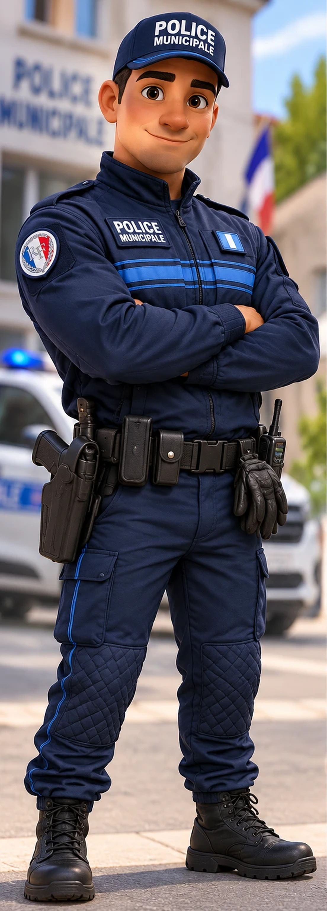
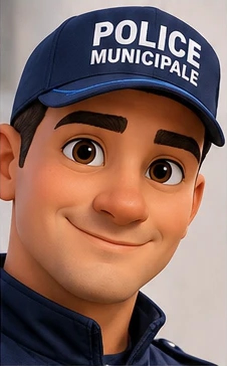
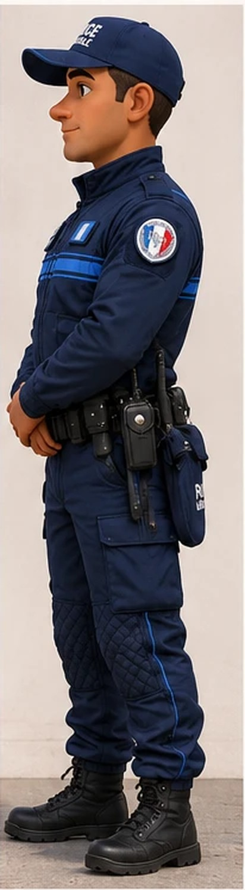
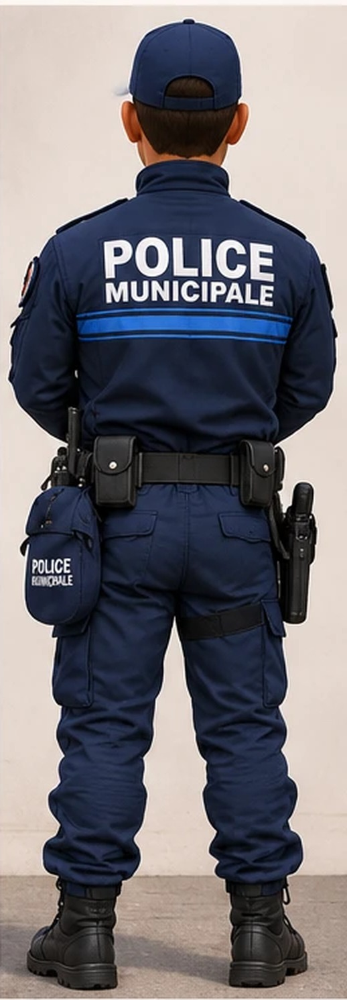

Police municipalePrévention dans les écoles
Urgence17 · 112
Police municipalePrévention dans les écoles
Proposition de campagne · document de démonstration non officiel · illustration générée par IA
 Règle n°1 · Sur la route
Règle n°1 · Sur la route
Pour traverser,
je regarde, j'écoute.
✓Toujours sur le passage piéton
 Règle n°2 · À vélo
Règle n°2 · À vélo
À vélo,
mon casque, je l'attache.
✓Obligatoire jusqu'à 12 ans
NON !

Règle n°3 · Dans la rueUn inconnu me parle ?
Je dis non, je préviens.
✓Je ne suis jamais un inconnu
Pas de secret.

Règle n°4 · Sur internetUn message fait peur ?
J'en parle à un adulte.
✓Le harcèlement, ça se dit
17
ou le 112

Règle n°5 · UrgenceLe 17, c'est pour
les vraies urgences.
✓Je donne mon nom et où je suis
Je le reconnais
à son uniforme.

Règle n°6 · ConfianceUn souci ?
L'agent est là pour moi.
✓Je peux toujours lui parler